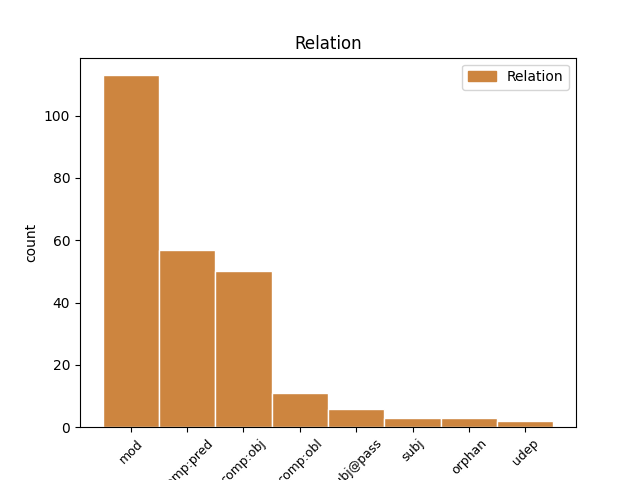
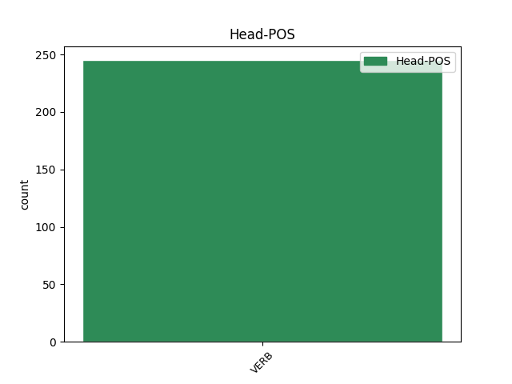
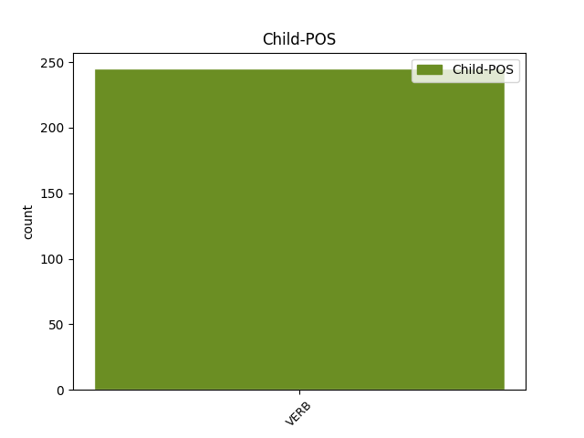

Distribution of features within this leaf



Agreement Rules sorted by frequency.
- When the dependent token is the modifer(mod) of the head token, and the head token is VERB and the dependent token is VERB.
1 καὶ _ _ _ _ 0 _ _ _
2 τοῦ _ _ _ _ 0 _ _ _
3 ποταμοῦ _ _ _ _ 0 _ _ _
4 ἐντεῦθεν _ _ _ _ 0 _ _ _
5 καὶ _ _ _ _ 0 _ _ _
6 ἐκεῖθεν _ _ _ _ 0 _ _ _
7 ξύλον _ _ _ _ 0 _ _ _
8 ζωῆς _ _ _ _ 0 _ _ _
9 ποιῶν ποιέω VERB V- Case=Nom|Gender=Masc|Number=Sing|Tense=Pres|VerbForm=Part|Voice=Act 0 _ _ _
10 καρποὺς _ _ _ _ 0 _ _ _
11 δώδεκα _ _ _ _ 0 _ _ _
12 κατὰ _ _ _ _ 0 _ _ _
13 μῆνα _ _ _ _ 0 _ _ _
14 ἕκαστον _ _ _ _ 0 _ _ _
15 ἀποδιδοὺς ἀποδίδωμι VERB V- Case=Nom|Gender=Masc|Number=Sing|Tense=Pres|VerbForm=Part|Voice=Act 9 mod _ ref=REV_22.2
16 τὸν _ _ _ _ 0 _ _ _
17 καρπὸν _ _ _ _ 0 _ _ _
18 αὐτοῦ _ _ _ _ 0 _ _ _
1 δέομαι _ _ _ _ 0 _ _ _
2 δὲ _ _ _ _ 0 _ _ _
3 τὸ _ _ _ _ 0 _ _ _
4 μὴ _ _ _ _ 0 _ _ _
5 παρὼν _ _ _ _ 0 _ _ _
6 θαρρῆσαι _ _ _ _ 0 _ _ _
7 τῇ _ _ _ _ 0 _ _ _
8 πεποιθήσει _ _ _ _ 0 _ _ _
9 ᾗ _ _ _ _ 0 _ _ _
10 λογίζομαι _ _ _ _ 0 _ _ _
11 τολμῆσαι _ _ _ _ 0 _ _ _
12 ἐπί _ _ _ _ 0 _ _ _
13 τινας _ _ _ _ 0 _ _ _
14 τοὺς _ _ _ _ 0 _ _ _
15 λογιζομένους λογίζομαι VERB V- Case=Acc|Gender=Masc|Number=Plur|Tense=Pres|VerbForm=Part|Voice=Mid 0 _ _ _
16 ἡμᾶς _ _ _ _ 0 _ _ _
17 ὡς _ _ _ _ 0 _ _ _
18 κατὰ _ _ _ _ 0 _ _ _
19 σάρκα _ _ _ _ 0 _ _ _
20 περιπατοῦντας περιπατέω VERB V- Case=Acc|Gender=Masc|Number=Plur|Tense=Pres|VerbForm=Part|Voice=Act 15 comp:pred _ ref=2COR_10.2
1 καὶ _ _ _ _ 0 _ _ _
2 εἶδον _ _ _ _ 0 _ _ _
3 τὸν _ _ _ _ 0 _ _ _
4 οὐρανὸν _ _ _ _ 0 _ _ _
5 ἠνεῳγμένον _ _ _ _ 0 _ _ _
6 καὶ _ _ _ _ 0 _ _ _
7 ἰδοὺ _ _ _ _ 0 _ _ _
8 ἵππος _ _ _ _ 0 _ _ _
9 λευκός _ _ _ _ 0 _ _ _
10 καὶ _ _ _ _ 0 _ _ _
11 ὁ _ _ _ _ 0 _ _ _
12 καθήμενος κάθημαι VERB V- Case=Nom|Gender=Masc|Number=Sing|Tense=Pres|VerbForm=Part|Voice=Mid 15 subj@pass _ ref=REV_19.11
13 ἐπ’ _ _ _ _ 0 _ _ _
14 αὐτὸν _ _ _ _ 0 _ _ _
15 καλούμενος καλέω VERB V- Case=Nom|Gender=Masc|Number=Sing|Tense=Pres|VerbForm=Part|Voice=Pass 0 _ _ _
16 πιστὸς _ _ _ _ 0 _ _ _
17 καὶ _ _ _ _ 0 _ _ _
18 ἀληθινός _ _ _ _ 0 _ _ _
19 καὶ _ _ _ _ 0 _ _ _
20 ἐν _ _ _ _ 0 _ _ _
21 δικαιοσύνῃ _ _ _ _ 0 _ _ _
22 κρίνει _ _ _ _ 0 _ _ _
23 καὶ _ _ _ _ 0 _ _ _
24 πολεμεῖ _ _ _ _ 0 _ _ _
1 δοῦλον _ _ _ _ 0 _ _ _
2 δὲ _ _ _ _ 0 _ _ _
3 κυρίου _ _ _ _ 0 _ _ _
4 οὐ _ _ _ _ 0 _ _ _
5 δεῖ _ _ _ _ 0 _ _ _
6 μάχεσθαι _ _ _ _ 0 _ _ _
7 ἀλλὰ _ _ _ _ 0 _ _ _
8 ἤπιον _ _ _ _ 0 _ _ _
9 εἶναι _ _ _ _ 0 _ _ _
10 πρὸς _ _ _ _ 0 _ _ _
11 πάντας _ _ _ _ 0 _ _ _
12 διδακτικόν _ _ _ _ 0 _ _ _
13 ἀνεξίκακον _ _ _ _ 0 _ _ _
14 ἐν _ _ _ _ 0 _ _ _
15 πραΰτητι _ _ _ _ 0 _ _ _
16 παιδεύοντα παιδεύω VERB V- Case=Acc|Gender=Masc|Number=Sing|Tense=Pres|VerbForm=Part|Voice=Act 0 _ _ _
17 τοὺς _ _ _ _ 0 _ _ _
18 ἀντιδιατιθεμένους ἀντιδιατίθημι VERB V- Case=Acc|Gender=Masc|Number=Plur|Tense=Pres|VerbForm=Part|Voice=Mid 16 comp:obj _ ref=2TIM_2.25
19 μήποτε _ _ _ _ 0 _ _ _
20 δώῃ _ _ _ _ 0 _ _ _
21 αὐτοῖς _ _ _ _ 0 _ _ _
22 ὁ _ _ _ _ 0 _ _ _
23 θεὸς _ _ _ _ 0 _ _ _
24 μετάνοιαν _ _ _ _ 0 _ _ _
25 εἰς _ _ _ _ 0 _ _ _
26 ἐπίγνωσιν _ _ _ _ 0 _ _ _
27 ἀληθείας _ _ _ _ 0 _ _ _
28 καὶ _ _ _ _ 0 _ _ _
29 ἀνανήψωσιν _ _ _ _ 0 _ _ _
30 ἐκ _ _ _ _ 0 _ _ _
31 τῆς _ _ _ _ 0 _ _ _
32 τοῦ _ _ _ _ 0 _ _ _
33 διαβόλου _ _ _ _ 0 _ _ _
34 παγίδος _ _ _ _ 0 _ _ _
35 ἐζωγρημένοι _ _ _ _ 0 _ _ _
36 ὑπ’ _ _ _ _ 0 _ _ _
37 αὐτοῦ _ _ _ _ 0 _ _ _
38 εἰς _ _ _ _ 0 _ _ _
39 τὸ _ _ _ _ 0 _ _ _
40 ἐκείνου _ _ _ _ 0 _ _ _
41 θέλημα _ _ _ _ 0 _ _ _
1 καὶ _ _ _ _ 0 _ _ _
2 ἴδον _ _ _ _ 0 _ _ _
3 καὶ _ _ _ _ 0 _ _ _
4 ἰδοὺ _ _ _ _ 0 _ _ _
5 ἵππος _ _ _ _ 0 _ _ _
6 λευκός _ _ _ _ 0 _ _ _
7 καὶ _ _ _ _ 0 _ _ _
8 ὁ _ _ _ _ 0 _ _ _
9 καθήμενος κάθημαι VERB V- Case=Nom|Gender=Masc|Number=Sing|Tense=Pres|VerbForm=Part|Voice=Mid 12 subj _ ref=REV_6.2
10 ἐπ’ _ _ _ _ 0 _ _ _
11 αὐτὸν _ _ _ _ 0 _ _ _
12 ἔχων ἔχω VERB V- Case=Nom|Gender=Masc|Number=Sing|Tense=Pres|VerbForm=Part|Voice=Act 0 _ _ _
13 τόξον _ _ _ _ 0 _ _ _
14 καὶ _ _ _ _ 0 _ _ _
15 ἐδόθη _ _ _ _ 0 _ _ _
16 αὐτῷ _ _ _ _ 0 _ _ _
17 στέφανος _ _ _ _ 0 _ _ _
18 καὶ _ _ _ _ 0 _ _ _
19 ἐξῆλθεν _ _ _ _ 0 _ _ _
20 νικῶν _ _ _ _ 0 _ _ _
21 καὶ _ _ _ _ 0 _ _ _
22 ἵνα _ _ _ _ 0 _ _ _
23 νικήσῃ _ _ _ _ 0 _ _ _
1 καὶ _ _ _ _ 0 _ _ _
2 ἴδον _ _ _ _ 0 _ _ _
3 καὶ _ _ _ _ 0 _ _ _
4 ἰδοὺ _ _ _ _ 0 _ _ _
5 ἵππος _ _ _ _ 0 _ _ _
6 μέλας _ _ _ _ 0 _ _ _
7 καὶ _ _ _ _ 0 _ _ _
8 ὁ _ _ _ _ 0 _ _ _
9 καθήμενος κάθημαι VERB V- Case=Nom|Gender=Masc|Number=Sing|Tense=Pres|VerbForm=Part|Voice=Mid 0 _ _ _
10 ἐπ’ _ _ _ _ 0 _ _ _
11 αὐτὸν _ _ _ _ 0 _ _ _
12 ἔχων ἔχω VERB V- Case=Nom|Gender=Masc|Number=Sing|Tense=Pres|VerbForm=Part|Voice=Act 9 orphan _ ref=REV_6.5
13 ζυγὸν _ _ _ _ 0 _ _ _
14 ἐν _ _ _ _ 0 _ _ _
15 τῇ _ _ _ _ 0 _ _ _
16 χειρὶ _ _ _ _ 0 _ _ _
17 αὐτοῦ _ _ _ _ 0 _ _ _
1 θαφθεῖσι θάπτω VERB V- Aspect=Perf|Case=Dat|Gender=Masc|Number=Plur|Tense=Past|VerbForm=Part|Voice=Pass 0 _ _ _
2 δέ _ _ _ _ 0 _ _ _
3 σφι _ _ _ _ 0 _ _ _
4 αὐτοῦ _ _ _ _ 0 _ _ _
5 ταύτῃ _ _ _ _ 0 _ _ _
6 τῇ _ _ _ _ 0 _ _ _
7 περ _ _ _ _ 0 _ _ _
8 ἔπεσον _ _ _ _ 0 _ _ _
9 καὶ _ _ _ _ 0 _ _ _
10 τοῖσι _ _ _ _ 0 _ _ _
11 πρότερον _ _ _ _ 0 _ _ _
12 τελευτήσασι τελευτάω VERB V- Aspect=Perf|Case=Dat|Gender=Masc|Number=Plur|Tense=Past|VerbForm=Part|Voice=Act 1 comp:obl _ ref=7.228.1
13 ἢ _ _ _ _ 0 _ _ _
14 ὑπὸ _ _ _ _ 0 _ _ _
15 Λεωνίδεω _ _ _ _ 0 _ _ _
16 ἀποπεμφθέντας _ _ _ _ 0 _ _ _
17 οἴχεσθαι _ _ _ _ 0 _ _ _
18 ἐπιγέγραπται _ _ _ _ 0 _ _ _
19 γράμματα _ _ _ _ 0 _ _ _
20 λέγοντα _ _ _ _ 0 _ _ _
21 τάδε _ _ _ _ 0 _ _ _
Disagree Examples:
1 τοὺς _ _ _ _ 0 _ _ _
2 δέ _ _ _ _ 0 _ _ _
3 προϊσχομένων _ _ _ _ 0 _ _ _
4 ταῦτα _ _ _ _ 0 _ _ _
5 προφέρειν _ _ _ _ 0 _ _ _
6 σφι _ _ _ _ 0 _ _ _
7 Μηδείης _ _ _ _ 0 _ _ _
8 τὴν _ _ _ _ 0 _ _ _
9 ἁρπαγήν _ _ _ _ 0 _ _ _
10 ὡς _ _ _ _ 0 _ _ _
11 οὐ _ _ _ _ 0 _ _ _
12 δόντες _ _ _ _ 0 _ _ _
13 αὐτοὶ _ _ _ _ 0 _ _ _
14 δίκας _ _ _ _ 0 _ _ _
15 οὐδὲ _ _ _ _ 0 _ _ _
16 ἐκδόντες ἐκδίδωμι VERB V- Aspect=Perf|Case=Nom|Gender=Masc|Number=Plur|Tense=Past|VerbForm=Part|Voice=Act 0 _ _ _
17 ἀπαιτεόντων ἀπαιτέω VERB V- Case=Gen|Gender=Masc|Number=Plur|Tense=Pres|VerbForm=Part|Voice=Act 16 mod _ ref=1.3.2
18 βουλοίατό _ _ _ _ 0 _ _ _
19 σφι _ _ _ _ 0 _ _ _
20 παρ’ _ _ _ _ 0 _ _ _
21 ἄλλων _ _ _ _ 0 _ _ _
22 δίκας _ _ _ _ 0 _ _ _
23 γίνεσθαι _ _ _ _ 0 _ _ _
1 τὴν _ _ _ _ 0 _ _ _
2 ἀνθρωπηίην _ _ _ _ 0 _ _ _
3 ὦν _ _ _ _ 0 _ _ _
4 ἐπιστάμενος ἐπίσταμαι VERB V- Case=Nom|Gender=Masc|Number=Sing|Tense=Pres|VerbForm=Part|Voice=Mid 0 _ _ _
5 εὐδαιμονίην _ _ _ _ 0 _ _ _
6 οὐδαμὰ _ _ _ _ 0 _ _ _
7 ἐν _ _ _ _ 0 _ _ _
8 τῷ _ _ _ _ 0 _ _ _
9 αὐτῷ _ _ _ _ 0 _ _ _
10 μένουσαν μένω VERB V- Case=Acc|Gender=Fem|Number=Sing|Tense=Pres|VerbForm=Part|Voice=Act 4 comp:pred _ ref=1.5.4
11 ἐπιμνήσομαι _ _ _ _ 0 _ _ _
12 ἀμφοτέρων _ _ _ _ 0 _ _ _
13 ὁμοίως _ _ _ _ 0 _ _ _
1 ἀποθωμάσας ἀποθαυμάζω VERB V- Aspect=Perf|Case=Nom|Gender=Masc|Number=Sing|Tense=Past|VerbForm=Part|Voice=Act 0 _ _ _
2 δὲ _ _ _ _ 0 _ _ _
3 Κροῖσος _ _ _ _ 0 _ _ _
4 τὸ _ _ _ _ 0 _ _ _
5 λεχθὲν λέγω VERB V- Aspect=Perf|Case=Acc|Gender=Neut|Number=Sing|Tense=Past|VerbForm=Part|Voice=Pass 1 comp:obj _ ref=1.30.4
6 εἴρετο _ _ _ _ 0 _ _ _
7 ἐπιστρεφέως _ _ _ _ 0 _ _ _
1 Ἀργεῖοι _ _ _ _ 0 _ _ _
2 δὲ _ _ _ _ 0 _ _ _
3 σφέων _ _ _ _ 0 _ _ _
4 εἰκόνας _ _ _ _ 0 _ _ _
5 ποιησάμενοι ποιέω VERB V- Aspect=Perf|Case=Nom|Gender=Masc|Number=Plur|Tense=Past|VerbForm=Part|Voice=Mid 0 _ _ _
6 ἀνέθεσαν _ _ _ _ 0 _ _ _
7 ἐς _ _ _ _ 0 _ _ _
8 Δελφοὺς _ _ _ _ 0 _ _ _
9 ὡς _ _ _ _ 0 _ _ _
10 ἀριστῶν _ _ _ _ 0 _ _ _
11 γενομένων γίγνομαι VERB V- Aspect=Perf|Case=Gen|Gender=Masc|Number=Plur|Tense=Past|VerbForm=Part|Voice=Mid 5 mod _ ref=1.31.5
1 ἔθεε _ _ _ _ 0 _ _ _
2 δέ _ _ _ _ 0 _ _ _
3 τις _ _ _ _ 0 _ _ _
4 ἀγγελέων ἀγγέλλω VERB V- Case=Nom|Gender=Masc|Number=Sing|Tense=Fut|VerbForm=Part|Voice=Act 0 _ _ _
5 τῷ _ _ _ _ 0 _ _ _
6 Κροίσῳ _ _ _ _ 0 _ _ _
7 τὸ _ _ _ _ 0 _ _ _
8 γεγονός γίγνομαι VERB V- Aspect=Perf|Case=Acc|Gender=Neut|Number=Sing|Tense=Past|VerbForm=Part|Voice=Act 4 comp:obj _ ref=1.43.3